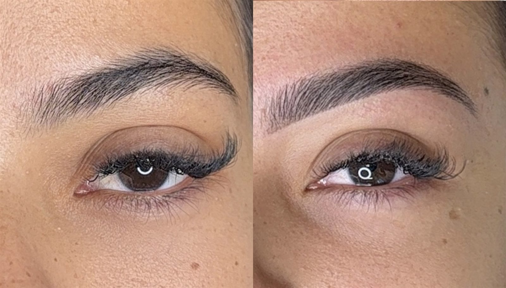
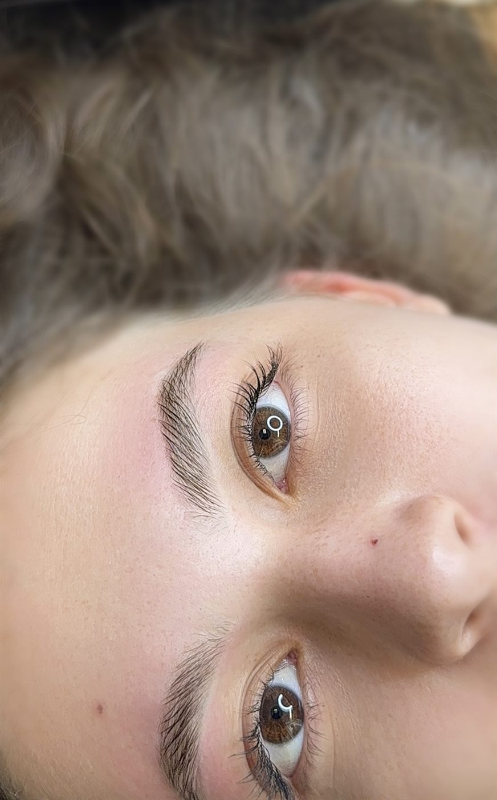
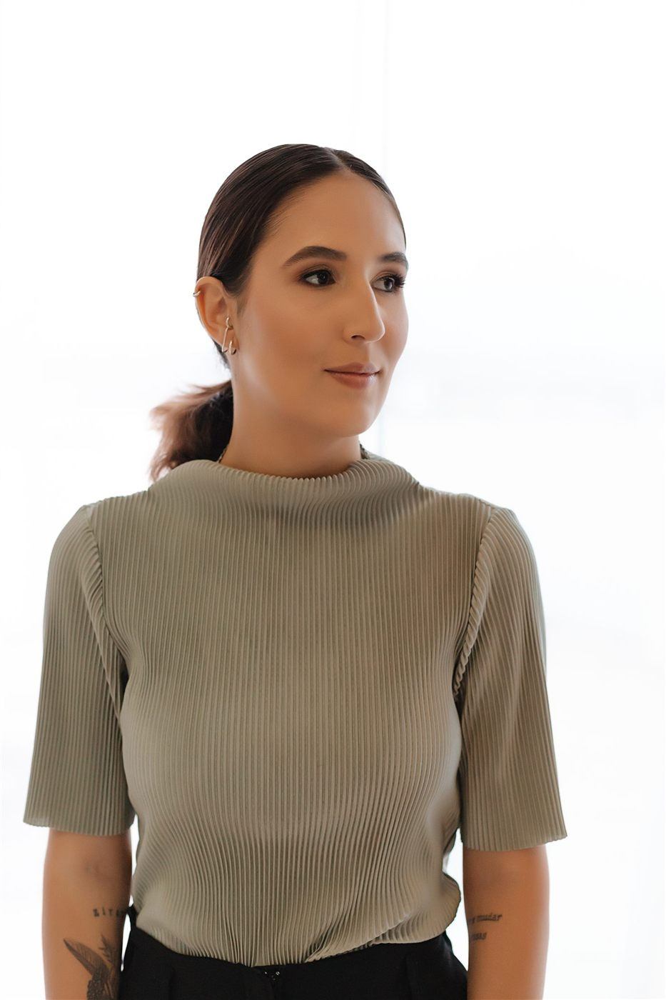
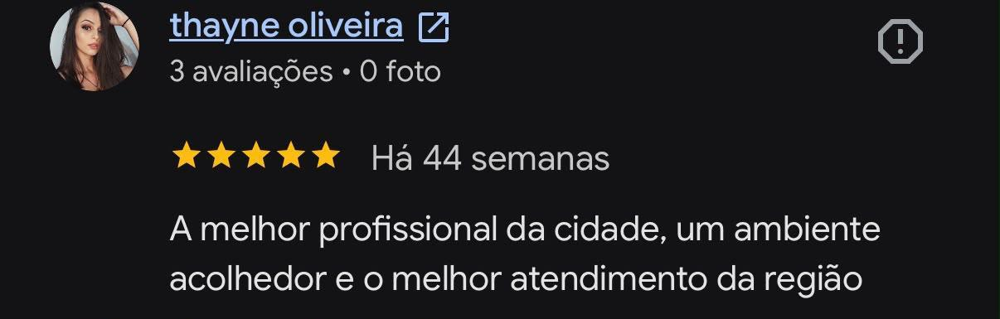
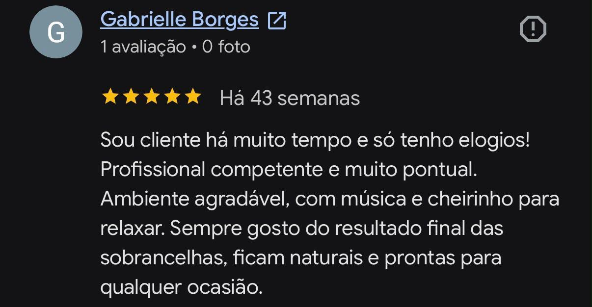
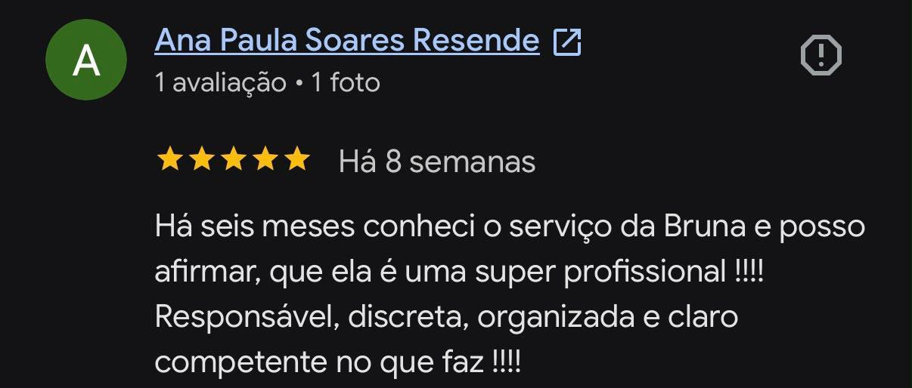
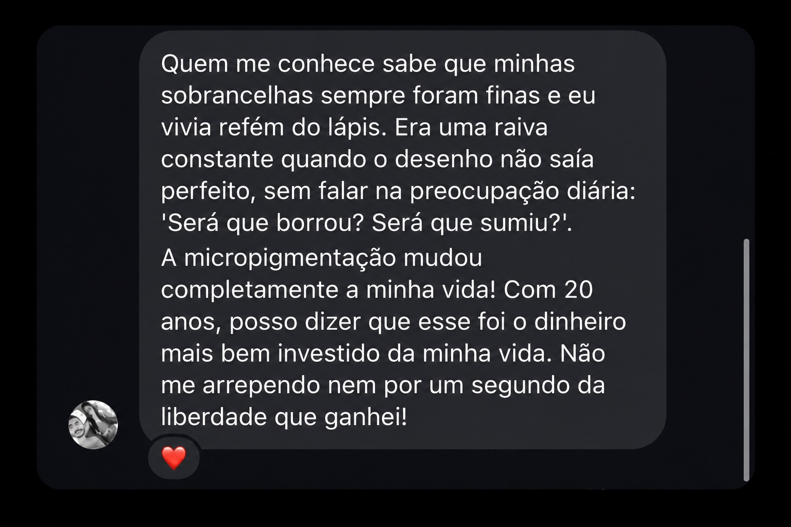

Micropigmentação esfumada | Natural Shadow
Efeito esfumado personalizado para preencher falhas, do mais natural ao mais marcante. Durabilidade média de 6 a 18 meses.
Quero marcar minha MicropigmentaçãoNo olho certo você sempre será arte
Micropigmentação, design de sobrancelhas e cuidados personalizados para realçar o que torna você única.

Mais que sobrancelhas:
confiança para se reconhecer.
Casos reais
Cada escolha é feita com técnica e atenção à sua individualidade.

Efeito esfumado personalizado para preencher falhas, do mais natural ao mais marcante. Durabilidade média de 6 a 18 meses.
Quero marcar minha Micropigmentação
Formato pensado para valorizar seus traços naturais, com pinça, linha ou ambas.
Quero marcar meu Design de sobrancelhas
Realça a cor dos fios sem abrir mão da naturalidade. Durabilidade de até 20 dias nos pelos.
Quero marcar meu Design com tintura
Preenche visualmente falhas e define o desenho com pigmentação temporária da pele. Durabilidade de até 7 dias na pele.
Quero marcar meu Design com henna
Quem vai cuidar de você
Olá, sou a Bruna! Especialista em micropigmentação e design de sobrancelhas. Falo em primeira pessoa porque meu trabalho carrega muito de quem eu sou. Desde pequena, sempre tive uma conexão com a arte. Desenhar, pintar, criar e transformar ideias em algo concreto sempre fizeram parte de mim. E foi na arte das sobrancelhas — uma arte feita na pele humana — que encontrei uma forma de transformar essa paixão em profissão.
Acredito que beleza não precisa seguir regras ou tendências. Para mim, uma sobrancelha bonita é aquela que respeita quem você é, suas características e o seu gosto pessoal.
Meu trabalho parte desse olhar: observar, planejar e criar de forma personalizada, buscando realçar o que já existe em você, sem transformar a sua identidade para encaixá-la em um padrão.
Porque mais do que ter sobrancelhas bonitas, acredito que você deve olhar no espelho e se reconhecer. Se sentir confortável, segura e única.
É isso que busco entregar através da minha arte: um resultado pensado para você, que valorize a sua beleza e faça sentido hoje, e continue fazendo sentido para você com o passar do tempo.
Histórias de autoestima
Avaliações reais do Google e mensagens recebidas pelo Instagram. Use os botões abaixo das imagens para abrir cada avaliação ou perfil.










Antes do seu atendimento
Informações iniciais para você chegar tranquila e segura à sua escolha.
Ainda tenho uma dúvidaNossa técnica é atual e sofisticada, e o resultado é definido de acordo com o seu estilo e a intensidade que você deseja. Durante a avaliação, você escolhe o tom e o efeito que deseja, mais natural ou mais marcado. Nada é feito sem que você saiba e aprove previamente. Tudo é planejado junto com você para que o resultado fique do seu agrado e respeite a sua identidade.
Sim, se esse for o resultado que você deseja. Nossa técnica de sombreamento é atual e sofisticada e permite personalizar o tom e a intensidade do esfumado. Durante a avaliação, você define junto conosco o efeito que deseja: mais natural e delicado ou mais definido e marcante. Tudo é pensado de acordo com o seu estilo e do jeito que você escolher.
Sim. A avaliação faz parte do processo e é essencial para definirmos todos os detalhes do seu procedimento. Nesse momento, conversamos sobre o resultado que você deseja e avaliamos seus traços para definir juntos o formato, o tom e a intensidade da micropigmentação. Também fazemos uma simulação detalhada para que você consiga visualizar como ficará o resultado antes de agendarmos a micropigmentação. Tudo é explicado e alinhado com você previamente. Nada é feito sem que você saiba e esteja de acordo.
Depende de como está a sua micropigmentação atual. Antes de realizar qualquer procedimento, avaliamos cuidadosamente a cor, a intensidade, o formato e a condição da pele para entender o que é possível fazer com segurança e qual será a melhor estratégia para o seu caso. Em algumas situações, é possível realizar um novo procedimento. Em outras, pode ser necessário um processo de neutralização ou remoção antes de uma nova micropigmentação. Cada caso é único, por isso a avaliação é indispensável.
A micropigmentação passa por um período de cicatrização, e os cuidados nessa fase são importantes para garantir uma boa recuperação e um resultado bonito. Por ser um procedimento superficial e delicado, a cicatrização acontece de forma tranquila. Após o atendimento, você receberá todas as orientações necessárias para cuidar da sua micropigmentação em casa, além de um kit completo de cuidados. E você não fica sem suporte: acompanhamos você desde a avaliação até o final da cicatrização, esclarecendo suas dúvidas e orientando em cada etapa.
É simples! Você pode clicar no botão de Agendar disponível no site e será direcionada para o nosso WhatsApp. Por lá, nossa equipe irá te orientar sobre a disponibilidade de horários, valores e todas as informações necessárias para o seu atendimento. Se tiver qualquer dificuldade para realizar o agendamento pelo site, fique tranquila: é só nos chamar pelo WhatsApp que vamos te ajudar.
Seu momento de cuidado começa aqui
Agende seu atendimento ou tire suas dúvidas pelo WhatsApp.
Localização & contato